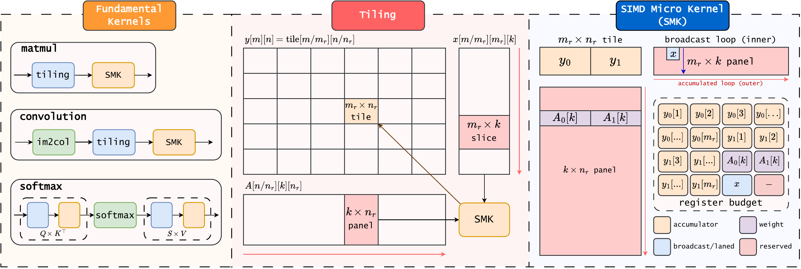
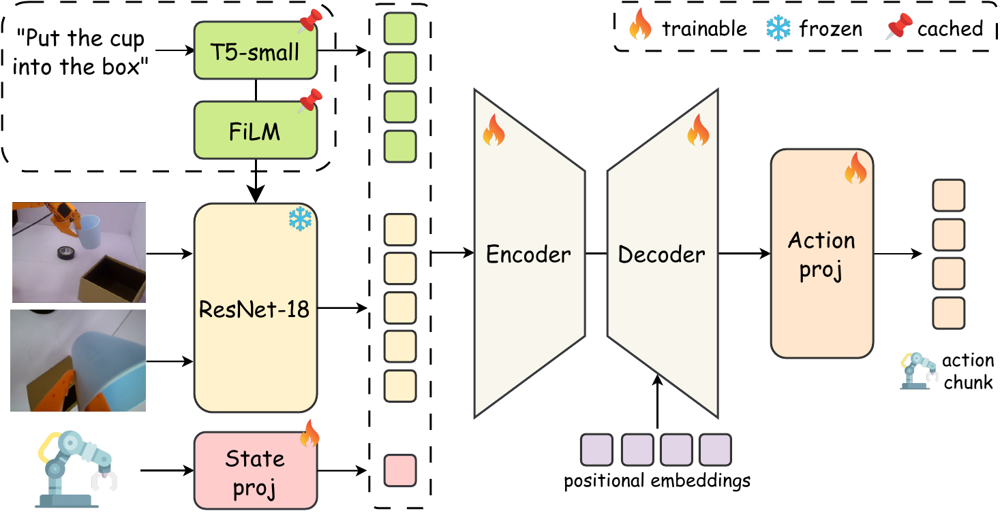
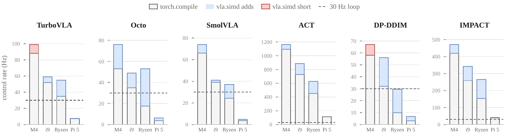

A language-conditioned manipulation policy that supplies actions faster than a 30 Hz controller consumes them — on a Raspberry Pi 5, CPU only.
We present vla.simd, a CPU inference engine for
language-conditioned manipulation policies, and IMPACT, an ACT-based policy that adds language
conditioning through cached text representations and visual modulation. vla.simd combines
shared SIMD micro-kernels, reusable computation and target-specific implementation choices, reaching a
median speedup of approximately 1.4× over compiled PyTorch references while maintaining numerical
fidelity. IMPACT encodes the instruction once per episode, spending an estimated at most 2.6% of
per-query compute on language conditioning, and is the only language-conditioned policy in our evaluated
set that supplies at least 30 actions per second on the Raspberry Pi 5.
vla.simd runs every linear layer, convolution and attention projection through one
packed-panel SIMD micro-kernel, and picks its register tile per target. The paper’s SMK Tiling
Algorithm, running live: pick a target, edit its parameters, click any row to see the register budget.

vla.simd. Linear layers, convolutions via panel im2col, and attention
projections share one packed-panel SIMD micro-kernel, whose register tile is selected per target
(6×16 on AVX2, 4×16 on NEON). Work is organised by lifetime: weights are packed once per process,
instruction-dependent tensors once per episode, and each query computes only observation-dependent
features.

vla.simd, red segments a loss; the dashed line marks the 30 Hz budget. On the Ryzen,
Octo-Small and SmolVLA cross that line with vla.simd.Four conditions on an SO-101 arm, 20 episodes each. Success rates and 95% confidence intervals are those reported in the paper; latency is the mean query roundtrip on that bench.
IMPACT, fp32. The scene is fixed and holds both objects; only the instruction changes.
Open the drawer, place the tape inside, close it. Twenty demonstrations, a separate checkpoint.